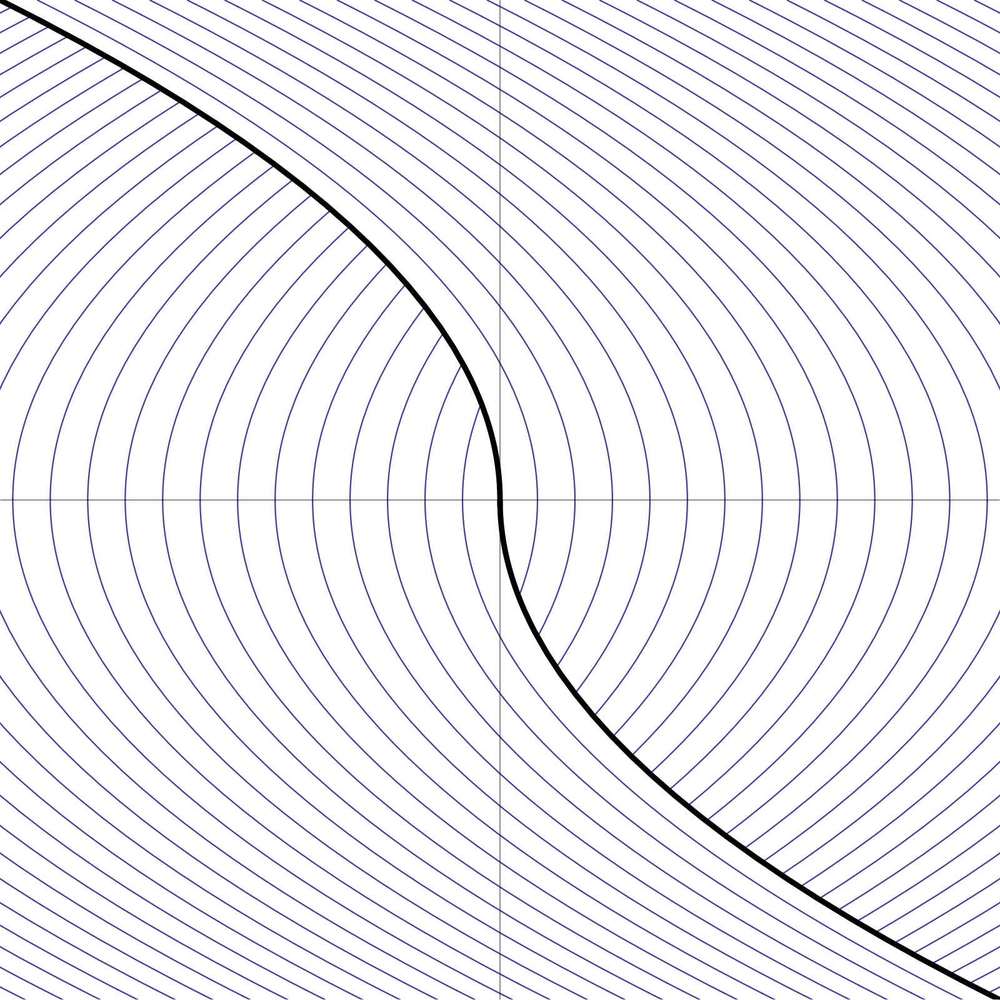
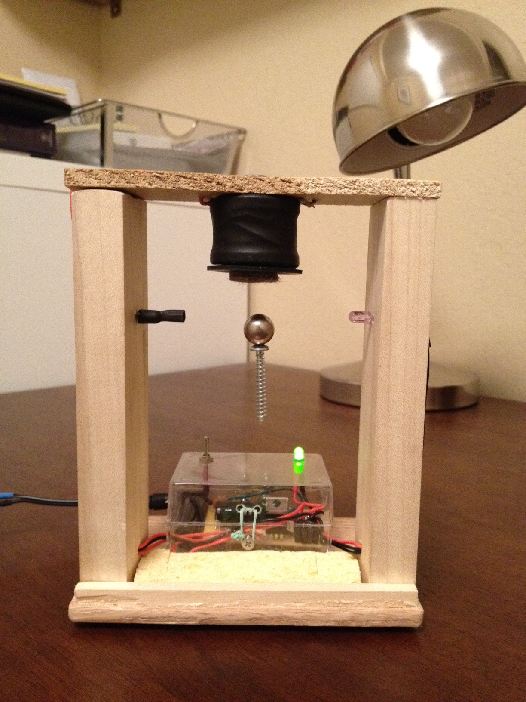

Although we have achieved our goal of designing a stable levitation control scheme, it is not necessary to stop here. A natural question is to ask for the optimal control rule, namely the one that causes the particle to reach the stable equilibrium point in the shortest time, regardless of its initial conditions. Using ideas from the theory of nonlinear optimal control which are beyond the scope of this course, it is possible to prove that the optimal control rule is
This makes intuitive sense, since the idea behind this control rule is to toggle the electromagnet as soon as the state of the system reaches the curve $x=\tfrac12 y|y|$. The flow from that point on takes place along the parabola $x=\tfrac12 y^2$ (if $x>0$) or $x=-\tfrac12 y^2$ (if $x<0$) and leads directly to the origin with no further toggling of the controller's state required. The phase portrait of the system governed by this control rule is shown in Figure 17.

Find a formula for the time $\tau(x,\dot{x})$ it takes the particle to get to the origin when the optimal switching rule is used.
